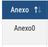
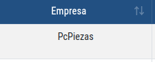
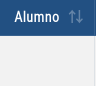
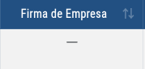
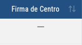
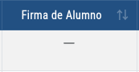
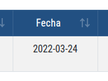
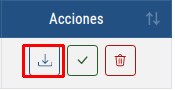
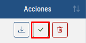
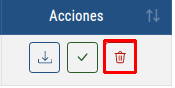

Esto es una ayuda para poder manejar el historial de Anexos
-
Vistazo general
Esta vista muestra una lista de anexos deshabilitados asociados a un tutor
1.Si eres Tutor, Jefe de estudios o Director:
-
Este campo nos muestra el tipo de Anexo
 -
Este campo nos muestra la empresa asociada a ese Anexo
 -
Este campo nos muestra el alumno asociado a ese Anexo
 -
Este campo nos muestra si la empresa ha firmado ese anexo, una linea es No, un check es Si
 -
Este campo nos muestra si el centro de estudios ha firmado ese anexo, una linea es No, un check es si
 -
Este campo nos muestra si el alumno ha firmado ese anexo, una linea es No, un check es si
 -
Este campo nos muestra la fecha de generación del Anexo
 -
Con este botón podras descargar todos los anexos que estan activos en la tabla

-
Con este botón podras descargar un anexo en concreto, el que se muestra en la linea de la tabla donde se encuentre el botón
 -
Con este botón podras habilitar un anexo en concreto, el que se muestra en la linea de la tabla donde se encuentre el botón
 -
Con este botón podras eliminar un anexo en concreto, el que se muestra en la linea de la tabla donde se encuentre el botón

Explicación de los campos:
Explicación de los botones:
2.Solo si eres Director o Jefe de estudios:
-
Esto sería una lista con los grupos vigentes en tu centro